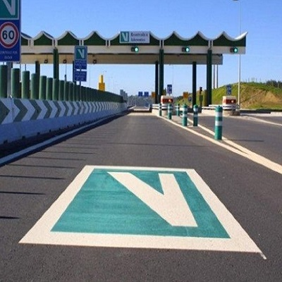

A Via Verde é um sistema de portagem eletrónica utilizado em Portugal. Ao passar pela via exclusiva a utentes numa portagem, um identificador DSRC colado no para-brisas do veículo comunica com uma antena presente na via e o valor da portagem é debitado automaticamente da conta bancaria do utilizador.
Com este dispositivo é possível tratar de todo o pagamento de forma automática e rápida, evitando assim o transito, a Via Verde é o excelente exemplo de uma boa interface entre um carro e a portagem.
A página de consulta de previsões meteorológicas do IPMA (Instituto Português do Mar e da Atmosfera) é um exemplo de uma má interface. Esta página tem como objetivo apresentar as previsões meteorológica de uma dada localização. Na minha opinião esta página tem uma má interface, pois depois da localização ser selecionada é apresentado no ecrã um vasto conjunto de dados, muitos dos quais são desnecessários.

Possíveis soluções: Simplificar a forma de como a informação é apresentada ao utilizador. Por exemplo, poderia ser apresentado no ecrã apenas a temperatura mínima e máxima e o resto da informação detalhada poderia ser mostrada noutra página a pedido do utilizador.